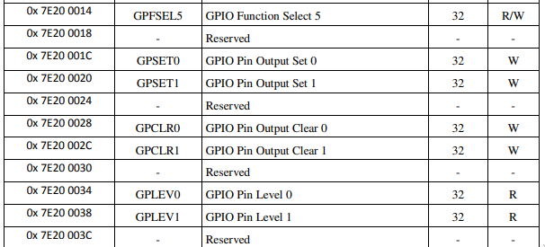
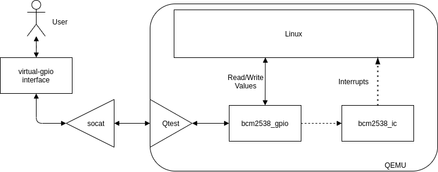

Simulating Raspberry PI GPIO interaction with QEMU
4 December 2020
Hi!
QEMU is an awesome software.
When I do operating system
development-related things, I always
try them in QEMU. That's the case of simulating
GPIOs.
From time to time I've to do some
operating-system lessons. Some of
these lessons need to interact with devices and
I want to explain how to interact with GPIOs.
To do so I would need to tell to every student
to buy a Raspberry Pi or another devboard, which
is unbearable. If a student broke his Raspberry
or lose it or whatever, he would need to buy
another one.
But every student always have a computer, which
is usually running a Linux distribution. :)
For this task, I've developed a simulator, than
you can download at [1]. With this you can
simulate GPIOs on a virtual raspberry Pi.
Searching for a simulation
There are some related works that can help to interact with gpios from a virtual machine: virtualgpios, gpios-mockup, etc etc. All of these cannot emulate "real" raspberry gpios. I would need to recompile a kernel module or give to the users a strange command which will overfit the setup.
Therefore the only way to do so is from QEMU itself.
The GPIOs are MMIO (Memory Mapped I/O): a write issued to a specific memory location, will issue a command on the GPIO controller. Therefore is extremely easy to modify, we just need to write on the guest memory. :)
In this image you can see the mapping of GPIOs controls and their memory addresses. A more detailed documentation is presented in the bcm2835 datasheet[2].
Searching for a writer
To interact with MMIO we need to write in the guest memory.
Qemu offers a debug protocol, documented in [3], qtest.
This is a line-based protocol which can be
attached to an Unix socket. Interacting with this UNIX
socket (for instance, with socat) we can write
commands such as:
readl 0x10000
OK 0x0000000000
writel 0x10000 0x10
OK
Respectively to read and write a long word. (In red you see my requests, in blue the responses).
Pretty easy, no? Well...sort of...if you write a wrong command on the socket, the qemu hypervisor will explode, and with it your swearing.
Also, we have a technical problem, if we try to write on the location of the GPIO MMIO specified in the datasheet (0x7e20xxxx), nothing will happen...
Search a guest memory location
Fortunately, every buffer allocated withmemory_map_* functions [4] of
Qemu APIs is labeled. You can find it using a command
in the qemu monitor:(qemu) info mtree
...
000000003f200000-000000003f200fff (prio 0, i/o): bcm2835_gpio
We can clearly see that the memory location
0x3f200000 is our GPIO MMIO.
Using this as specified in the datasheet will get us to our goal of
writing and reading GPIOs! :)
That's how the get $N and set $N $V of the
application published at [1] works.
This procedure is also applicable at vanilla qemu.
You can try it launching virtual-gpio and then exporting gpio 4 in the virtual machine with the following commands:-
Setup the Virtual Raspberry pi using
$ ./setup.sh - Launch the virtual-gpio application
$ ./virtual-gpio [ ] Virtual GPIO manager [ ] Listening for connections (gpio)> - Execute qemu (remember to keep
virtual-gpioopen!!!) using$ ./run.sh - Wait for the guest to boot, login and then
export a GPIO from Linux:
# echo 4 >/sys/class/gpio/export # echo in >/sys/class/gpio/gpio4/direction # cat /sys/class/gpio/gpio4/value 0
- Modify the value of the GPIO from the
virtual-gpioapplication:
(gpio)> set 4 1
- Read the result in the guest system
# cat /sys/class/gpio/gpio4/value 1
The desperate quest for an interrupt
If you experiment a little more with GPIOs you'll see
that interrupt-based interaction (with the file
/sys/class/gpio/$gpioN/edge)
is not working
That's because qemu support for bcm2583 GPIOs is not present. You can find a patched version of the hypervisor at [5], using this one you'll get interrupt delivered to your guest OS application!
In details, this patch connect the
bcm2583_gpio.c device, which controls
Raspberry Pi MMIO GPIOs, to the
bcm2583_ic.c interrupt controller.
With this bus we can ask to the Interrupt Controller
to fire a specific GPU interrupt
delivering interrupts using the
qemu_set_irq function.
These interrupts are grouped in three, as stated by the
kernel code [6]. The first GPU interrupt we need to fire
is the interrupt 49. Using this the first bank of GPIOs
(0-27) will be signalled. Then, the guest will ask for
which GPIO raised the interrupt, which is specified in
the EDS register.
Also, the kernel need to set-up specific registers to instruct the BCM2583 of which interrupt it wants. These registers are loaded and managed in the same file which handles GPIOs (bcm2583_gpios.c).
The behaviour could be schematized as follows: 
So, that's all for now, have fun with your virtual Raspberry PI and let me know what do you think of it!Bye,
D.
[1] https://github.com/berdav/qemu-rpi-gpio
[2] https://www.raspberrypi.org/app/uploads/2012/02/BCM2835-ARM-Peripherals.pdf
[3] https://qemu.readthedocs.io/en/latest/devel/qtest.html
[4] The Raspberry Pi interrupts are grouped by GPU ones and ARM ones, the GPIOs are controlled by the GPU.
[5] https://github.com/berdav/qemu
[6] https://elixir.bootlin.com/linux/latest/source/drivers/pinctrl/bcm/pinctrl-bcm2835.c#L655